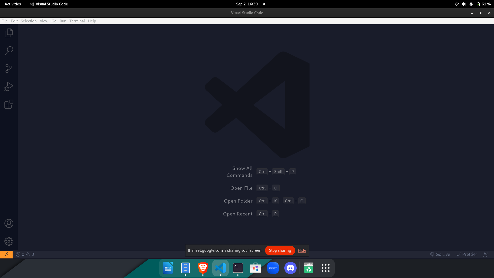

Back to Menu Utama
Proyek
PEMBACAAN SENSOR RTC PADA SIMULASI ARDUINO PROTEUS TAHUN 2023
• Membuat serta mensimulasikan pembacaan jarak yang dibaca oleh sensor
RTC yang di programkan menggunakan Arduino dalam simulasi proteus
SIMULASI ARDUINO DALAM PEMBACAAN SENSOR ULTRASONIC HC-SR04 TAHUN 2023
• Membuat serta memprogram Arduino pada simulasi proteus sehingga mampu
melakukan pembacaan jarak suatu objek yang dibaca oleh sensor ultrasonic
HC-SR04

Hardskill
Saya memiliki sejumlah hardskill yang dapat saya andalkan dalam berbagai
bidang, termasuk keahlian dalam menggunakan berbagai perangkat lunak
seperti Proteus untuk simulasi elektronik, Arduino IDE dan Android IDE
untuk pengembangan perangkat keras dan perangkat lunak, Visual Studio
Code untuk pemrograman dan pengembangan aplikasi, serta Corel Draw untuk
desain grafis.
Selain itu, saya memiliki keahlian dalam bahasa pemrograman seperti C,
C++, dan Java, yang memungkinkan saya untuk mengembangkan aplikasi,
melakukan pemrograman mikrokontroler, dan menganalisis data secara
efisien. Gabungan dari semua ini memungkinkan saya untuk menjadi seorang
profesional yang berfokus pada solusi teknologi yang kreatif dan
inovatif.
Soft Skill
Sebagai seorang individu yang teliti, pekerja keras, dan optimis, saya
memiliki kemampuan untuk menyesuaikan diri dengan lingkungan yang
dinamis. Saya juga memiliki pemahaman yang melihat big picture dari
suatu masalah. Keterampilan dalam bekerja sama dengan orang banyak,
mengelola proyek, dan berkolaborasi dengan berbagai tim dari latar
belakang berbeda adalah bagian dari kemampuan saya.
Pendidikan saya di Teknik Fisika di Institut Teknologi Sepuluh Nopember
memberikan dasar yang kuat, sementara keterampilan dalam bahasa seperti
Bahasa Indonesia dan Bahasa Inggris serta pengalaman dalam berbagai
proyek organisasi dan kepanitiaan seperti Forum Komunal Mahasiswa
Sumenep ITS, Calcium Basketball SMAN 1 Sumenep, dan Sanggar Seni Rupa
Artline menunjukkan kemampuan saya dalam mengelola, mengkoordinir, dan
memimpin berbagai inisiatif.
Selain itu, saya memiliki pengalaman dalam proyek-proyek teknis seperti
pembacaan sensor RTC pada simulasi Arduino Proteus dan pembacaan sensor
ultrasonik HC-SR04. Dalam hal prestasi, saya telah meraih berbagai
penghargaan, termasuk juara dalam berbagai lomba basket dan prestasi
dalam kompetisi sains nasional dan provinsi. Semua pengalaman ini telah
membentuk keterampilan-keterampilan soft skill saya, termasuk kemampuan
berkolaborasi, kepemimpinan, dan pemecahan masalah.